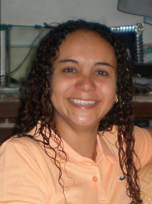

Entrenadora, Emprendedora y Apasionada por el Deporte y la Educación
Administradora mensión contabilidad de profesión, pero mi verdadera pasión es formar a las futuras generaciones como entrenadora de fútbol base para niños. Actualmente, estoy perfeccionando mis habilidades tecnológicas con una beca en Front End en Alura Latam y comenzando mis estudios en la UPEL Universidad de Venezuela donde se forman a los maestros y profesores del pais.
Después de vivir en el exterior debido a la situación económica y política de Venezuela, decidí regresar para culminar mi formación profesional y contribuir al desarrollo de mi país. Como fundadora de Deportivo ROI Fútbol, mi misión es rescatar a niños, niñas y adolescentes a través del deporte, inculcando disciplina, esfuerzo y valores cristianos.
Soy una mujer proactiva y multifacética que no le teme al trabajo. Mi vida es un testimonio de perseverancia y dedicación, con un fuerte compromiso en el desarrollo integral de los más jóvenes a través del deporte.
Redes sociales y otros
Instagram
Facebook
Curriculum Vitae
Soft Kills - Cursos
Principiante Programación
Lógica de programación
ChatGpt
Git y GitHub
HTML y CSS
Header y Footer
Clases, posicionamiento
Ambiente de desarrollo
JavaScript
Sumergete en la programacion
Programación con JavaScript
Principio de la Programación
Desarrollo Personal
Aprende a aprender
Foco y Hábitos
LinkedIn
Ocupación
Con 10 años de experiencia en el futbol, talleres y cursos, gran pedagogía, fundadora de la Escuela Integral Deportivo ROI
Entrenadora de y educación física
Son más de 3 años enseñando a niñas, niños y adolescentes en sus casas, recuperacón en sus clases de matemática, ingles y otros. También instruirlos en técnicas de estudios para su aprendizaje individual.
Coach en técnicas de estudios, matemáticas e ingles
Estudios y Estudiante
Estudios Realizados
Titulos obtenidos:.
Bachiller en Ciencias
Año - 1994
Técnico Superior Administración
Año - 2004
Monitor deportivo
Año - 2010
Estudios en curso
En la actualidad:.
Programador Front End
Para graduarme en el año 2025, como programadora de páginas web en la parte frontal, es decir, la parte que el usuario ve e interactúa con ella
Universidad Pedagógica Experimental
Para graduarme en el nombre de Dios en el año 2030, como profesora de "Ingles, como lengua extranjera, cabe destacar, que con mi experiencia y mis otros títulos podré ingresar en el sector educativo para el año escolar 2026.
Hobbies
VIAJAR
Un corto paseo, si el lugar es nuevo para mí es un viaje, si voy a un sitio que ha sido recientemente remodelado, también es parte de un nuevo lugar, un viaje a veces no importa el destino, si no el propio, camino es lo importante y sobre todo ¡con quién se comparte ese viaje!
DEPORTES
El movimiento, se ha convertido en parte de mi filosofía de vida, el movimiento es vida, de allí comienza la salud, todo deporte para mí es genial, desde su disciplina, sus reglas, y su entrenamiento.
COCINAR
Si el movimiento y el compartir con amigos y familia es parte de una vida saludable y feliz, ni hablar de la cocina, el disfrute y sabor de cada alimento que desde su adquisición hasta servirlo en la mesa es otro viaje muy particular para mí.
MÚSICA
La música para mí es la mejor máquina para viajar en el tiempo y las emociones, hay canciones que te hacen llorar y reir, incluso ir a la época de nuestra niñez y adolescencia, y ni se diga de las fiestas y las celebraciones...
INSTRUIR
Es la mejor manera de dejar algo de mí en el mundo, enseñar a cualquier persona niño o adulto, la palabra de Dios dice "el mundo perece por falta de conocimiento". Hay que enseñar y enseñar bien...